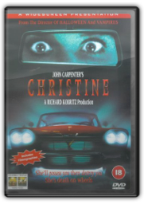
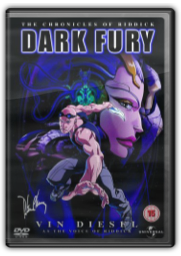
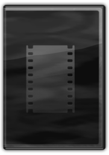
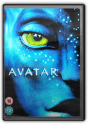

|
Eddie Izzard : Circle [2000]


Circlereminds us that, despite his less than successful dalliances with film and TV, Eddie Izzard's reputation rests securely on his genius for stand-up comedy. Circlecomes on the back of an ever-growing global touring schedule, with this particular performance being recorded in New York. Always sensitive to his environment, the comedian throws in several local references to gratify his strongly partisan audience. Much of the delight of an Izzard performance is watching him weave from topic to topic, often painting himself into a corner, and Circleis no exception. A little slow to get started, once he finds his stride this is a veritable masterclass in live comedy, dealing with subjects ranging from the absurd to the everyday. Indeed, Izzard is almost a human equivalent of The Far Sidecartoon series, weaving the worlds of the bizarre and the ordinary together to make fresh points: witness his show-stopping account of the Death Star canteen. This is a must for all fans, equally so for those yet to fall under his spell. —Phil Udell

Christine [1984]
John Carpenter
She can't (and won't) drive 55.... Stephen King's novel about the twisted love affair between a boy and his car gets transferred to the screen, courtesy of suspense master John Carpenter. Although lacking some of the more outré supernatural elements of the source material, this high-octane cinematic tune-up more than delivers the goods, horror-wise (Christine's midnight rampages will never be forgotten)—as well as being a sly exposé of the random cruelties within the high-school pecking order. Keith Gordon (who has gone on to become a stellar director in his own right, with films such as A Midnight Clearand Mother Nightto his credit) gives a wonderfully controlled central performance. Carpenter's atmospheric original score is backed up by a well-chosen collection of rock classics, including George Thorogood's "Bad to the Bone" (the titular character's all-too-apt theme song). —Andrew Wright, Amazon.com

The Chronicles Of Riddick - Dark Fury
Peter Chung
Taking its cue from The Animatrix, Dark Furyis part of a new trend of bridging theatrical sequels. As an official product of a franchise, the 35-minute anime benefits from having the original actors voice the characters, including Vin Diesel as Riddick. This story opens with the new action hero and the two other survivors of Pitch Blackalready caught by a giant spaceship filled with dread. The sinewy leader has a unique—and creepy—jail for master villains and she has her sights set on Riddick. The film—indeed the series—is indebted to animator Peter Chung, who brings his techno style from his Aeon Fluxseries. His smooth animation for Riddick doesn't reinvent the character as much as give him a new, appealing fluidity. As anime goes, there's nothing really new here—plenty of action, cool killers, and dramatic spurts of blood—but it's a building block for how this genre might enliven movie series and sequels in the future. —Doug Thomas

Pancho Villa [1971] [DVD]
Telly Savalas, Clint Walker, Antonio Ramírez de Loaysa, Eugenio Martín

Avatar [DVD] [2009]
Sam Worthington, Sigourney Weaver, James Cameron
After 12 years of thinking about it (and waiting for movie technology to catch up with his visions), James Cameron followed up his unsinkable Titanic with Avatar, a sci-fi epic meant to trump all previous sci-fi epics. Set in the future on a distant planet, Avatar spins a simple little parable about greedy colonizers (that would be mankind) messing up the lush tribal world of Pandora. A paraplegic Marine named Jake (Sam Worthington) acts through a 9-foot-tall avatar that allows him to roam the planet and pass as one of the Na'vi, the blue-skinned, large-eyed native people who would very much like to live their peaceful lives without the interference of the visitors. Although he's supposed to be gathering intel for the badass general (Stephen Lang) who'd like to lay waste to the planet and its inhabitants, Jake naturally begins to take a liking to the Na'vi, especially the feisty Neytiri (Zoë Saldana, whose entire performance, recorded by Cameron's complicated motion-capture system, exists as a digitally rendered Na'vi). The movie uses state-of-the-art 3D technology to plunge the viewer deep into Cameron's crazy toy box of planetary ecosystems and high-tech machinery. Maybe it's the fact that Cameron seems torn between his two loves—awesome destructive gizmos and flower-power message mongering—that makes Avatar's pursuit of its point ultimately uncertain. That, and the fact that Cameron's dialogue continues to clunk badly. If you're won over by the movie's trippy new world, the characters will be forgivable as broad, useful archetypes rather than standard-issue stereotypes, and you might be able to overlook the unsurprising central plot. (The overextended "take that, Michael Bay" final battle sequences could tax even Cameron enthusiasts, however.) It doesn't measure up to the hype (what could?) yet Avatar frequently hits a giddy delirium all its own. The film itself is our Pandora, a sensation-saturated universe only the movies could create. —Robert Horton |


 Made with Delicious Library
Made with Delicious Library
Springfield, State zipflap congrotus delicious library Clancy, Liam